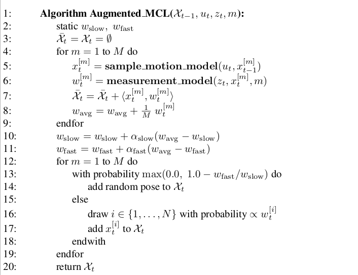

AMCL 算法详解
Mario 2022-01-15
1. 理论基础
AMCL: Adaptive (Augmented) Monte Carlo Localization
1.1 高斯分布
特征值分解，根据协方差产生随机位姿
pf_pdf_gaussian_sample
1.2 贝叶斯公式
1. Particle Filter
Partical Filter is a Bayesian Filter.
Line 4: 根据控制量采样出m个state x
Line 5: Importance Factor
Line 8~11: Re-sampling, 重要性采样 [Importance Re-sampling]
- target distribution, proposal distribution
{kind=link}
3. 蒙特卡罗方法 Monte Carlo Localization
3.1 算法流程
注意： 这边第6行是将每个粒子的位姿与概率做更新，并没有增加粒子数量
{kind=link}
存在的问题：
- 对于stochastic算法，总是有几率删除掉了所有正确的粒子。
- the robot might get kidnapped with a small probability,
改进： 可以随机加入particle来解决。随机particle的加入根据定位的精确程度。
采用了short_term, long_term计算定位概率，用两个decay rates，其中 \(0 < \sigma_{slow} << \sigma_{fast}\),
难点在13行，如果现在粒子的精确度大于之前的精度，即\(w_{fast}>w_{slow}\), 则不额外加入粒子。如果现在粒子的精度弱于之前的精度，即\(w_{fast}< w_{slow},1-\frac{w_{fast}}{w_{slow}} > 0\)，所以加入粒子，定位越不准确，随机粒子越多。

{kind=link}
3.2 运动方程更新 [P136]
{kind=link}
由于里程计的有精度问题，所以在实现的时候加上了高斯噪声来模拟里程计的精度误差
Todo
这边高斯误差的方差有点讲究，暂时还没看懂
{kind=link}
3.3 观测方程: [P172] lm for landmark
这边距离的计算代码中用定点化优化，根据地图，可以直接计算出地图中每个点到最近障碍物点的距离，然后查表即可
权重是一个高斯分布加上一个random值，高斯分布平均值为0，方差为\(\sigma\)，当激光点距离障碍物点远的时候，高斯值比较小，趋近于0，当激光点距离障碍物近的时候，高斯值趋近于1
所以，越准确的粒子，其q值越大
代码中每个激光点的q最后都三次方再加到总weight里
{kind=link}
3.4 重要性采样(低方差采样算法) [110]
根据每个粒子的权重累加，然后生成一个随机数，看这个随机数落在累加数组c的第几个区间内，根据此取i。由于rand是平均采样，所以，当权重大的时候，权重对应的区间宽，计粒子更容易被采样到
{kind=link}
3.5 KLD采样方法
Kullback-Leibler divergence
自适应地计算粒子数，用卡方分布去近似计算估计概率分布和真实概率分布之间的距离
\(M_x\)与k成正比，即粒子所占用Histogram的bin越多，说明定位越不稳定，则增加粒子数量
bin的数量用KDTree的叶子数量来表示 set_b->kdtree->leaf_count，大致意思是叶节点越多，粒子数量越多
{kind=link}
3.6 MCL with mixture distribution [TODO]
proposal distribution: \(P(x_t|u_t, x_{t-1}bel(x_{t-1}))\)， 即根据运动模型的x的分布。
the particle filter uses the motion model as proposal distribution, but it seeks to approximate a product of this distribution and the perceptual likelihood. The larger the difference between the proposal and the target distribution, the more samples are needed.
Particles are generated according to the measurement model